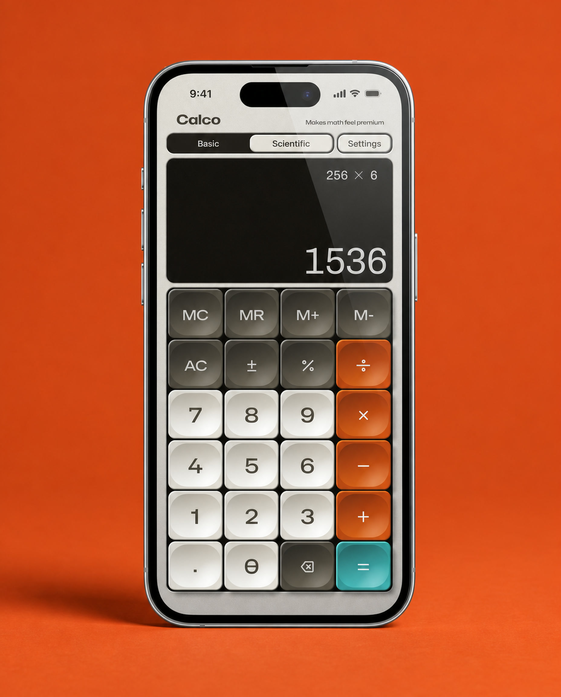
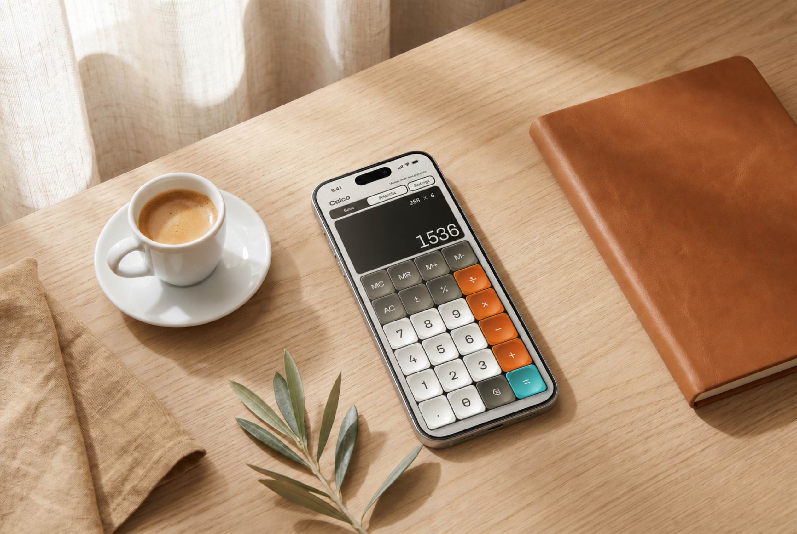
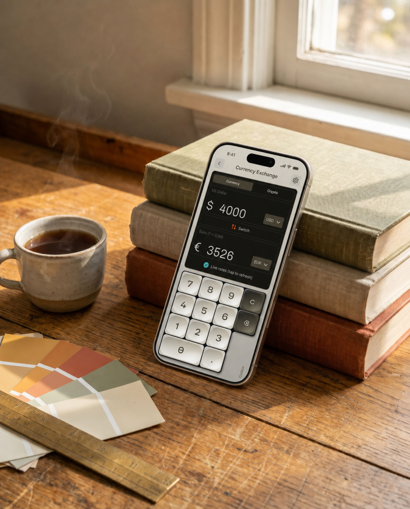
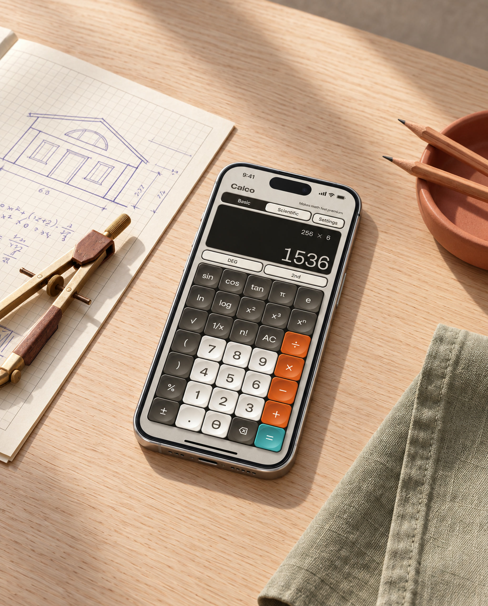
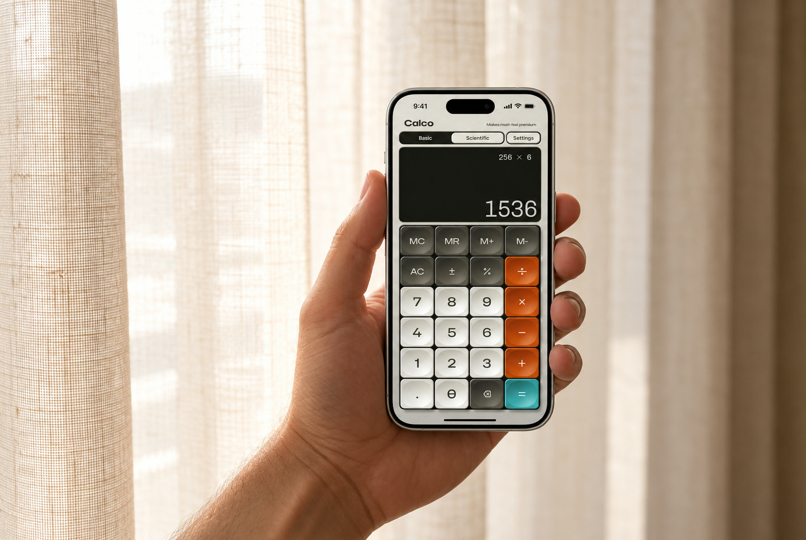
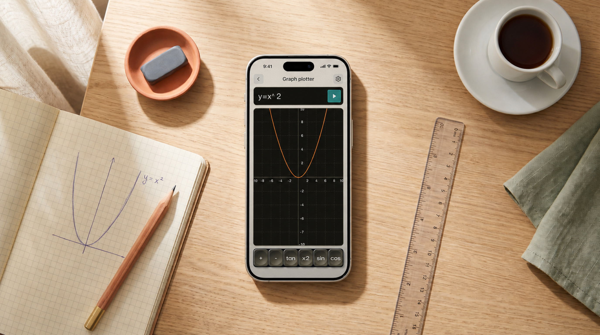
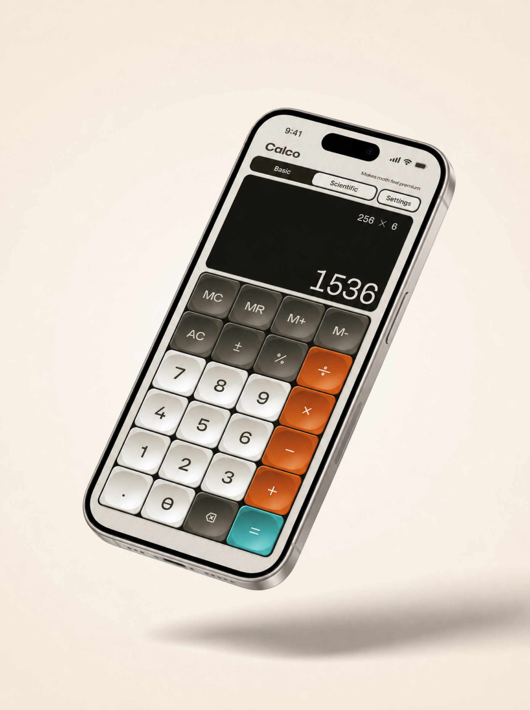
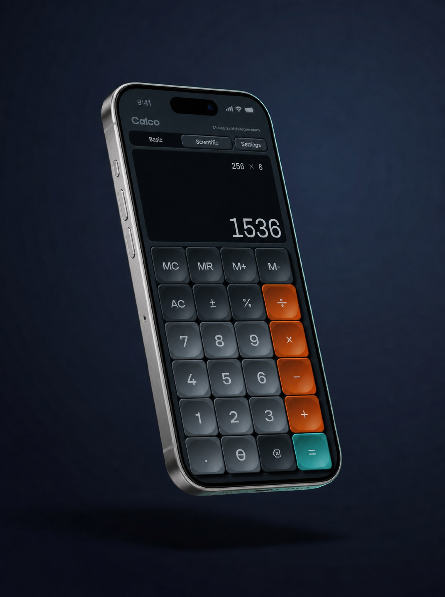
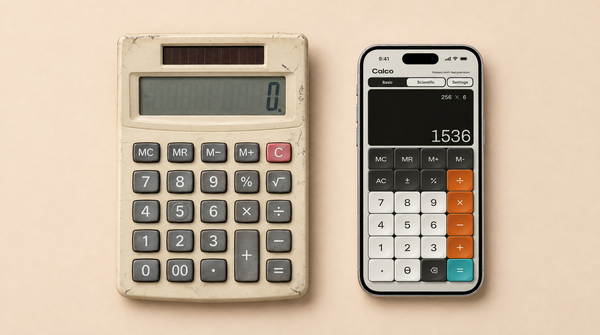

A desk calculator.
On your phone.
Raised keys, soft shadows and a display set into the panel. Skeuo brings the familiar feel of a desk calculator to everyday maths, conversions and more.

What is skeuomorphism?
Skeuomorphism means giving something on a screen the appearance of a physical object. In Skeuo, that means buttons with depth, shadows around their edges and a display that looks set into the surface. It takes its cues from the calculators you could keep on your desk.
Basic and scientific calculations use the same keypad design. Currency, units, dates, percentages and financial calculations each have their own tools.
Skeuo is a one-time purchase, with no ads or subscription.
-
i.
A textured panel
A fine grain gives the background the appearance of a physical surface.
-
ii.
Keys with depth
Rounded edges, highlights and shadows make the keys look raised. Optional sound and haptics add feedback when you tap.
-
iii.
A recessed display
The dark display sits visually below the keypad surface, with large numerals for the result.
-
iv.
Orange operators, teal equals
Colour separates the number keys from the operators and makes the equals key easy to find.
For the maths you do every day.
Check a price in another currency, convert a measurement or work out a discount. When you need more, there are scientific functions, a graph plotter, date calculations and a time value of money solver for payments, rates and future values.





Light or dark.
Choose a light or dark appearance in Settings. Both keep the same layout, rounded keys and sense of depth.


It started with a desk calculator.
The Casio MS-80 is one of the references behind Skeuo. Its separate display, rounded buttons and coloured keys give it a recognisable shape. Those details carry over into the app, alongside tools for calculations a desk calculator could not handle.
The name Skeuo comes from skeuomorphism.

What’s included.
- Platform
- iPhone and iPad. Requires iOS 17 or later.
- Modes
- Basic and scientific calculators, currency and unit converters, a TVM solver, date and percentage calculations, and a graph plotter.
- Themes
- Light and dark appearances.
- Pricing
- $7.99. One-time purchase. No ads or subscription.
- Haptics & Sound
- Key sounds and haptic feedback. Turn either off in Settings.
- Updates
- App updates included in your purchase.
Get Skeuo-Calculator.
For iPhone and iPad. $7.99 as a one-time purchase, with no ads or subscription.